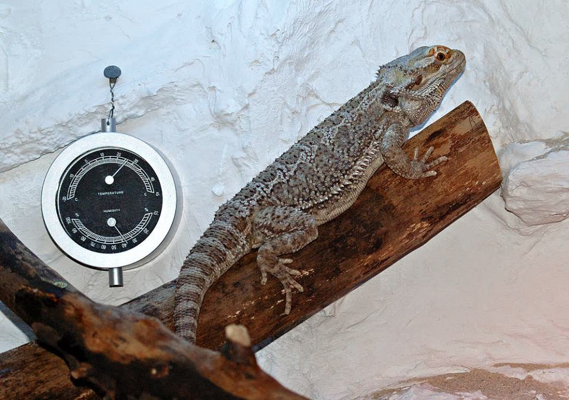

Zonen statt Deko
Wärmeplätze, kühlere Bereiche, Korkröhren, Äste, Steine und Sichtschutz geben dem Tier echte Wahlmöglichkeiten.
Reptilien, Schildkröten, Fische: Sie sind leise, machen nichts kaputt – und sterben leise, wenn die Haltung nicht stimmt.

Bei Exoten heißt „pflegeleicht" oft nur: Das Tier stirbt leise.
Temperatur, UV-B, Feuchtigkeit, Futter und Meldepflichten sind keine Details. Sie sind die Haltung.
Viele Exoten wollen keine Tricks lernen. Sie brauchen Klima, Licht, Verstecke, Klettermöglichkeiten und Futterreize, die zu ihrer Art passen.
Wärmeplätze, kühlere Bereiche, Korkröhren, Äste, Steine und Sichtschutz geben dem Tier echte Wahlmöglichkeiten.
Pflanzen, Strömung, Verstecke, passende Gruppen und stabile Wasserwerte beschäftigen Fische besser als jeder Menschkontakt.
Sonnenplätze, Schatten, Futterpflanzen, Unebenheiten und Rückzug machen ein Gehege lebendiger und tiergerechter.
Bartagamen, Kornnattern, Leopardgeckos – sie wirken unkompliziert. Kein Gassi, kein Bellen, kein Fellverlust. Aber hinter der scheinbaren Anspruchslosigkeit steckt ein hochkomplexes System aus Temperaturzonen, Luftfeuchtigkeit, UV-Beleuchtung und artgerechter Ernährung.
UV-B-Strahlung ist für die meisten Reptilien lebensnotwendig. Ohne UV-B kann der Körper kein Vitamin D3 bilden, das wiederum für die Kalziumaufnahme nötig ist. Fehlt Kalzium, erweichen die Knochen (metabolische Knochenerkrankung). Das Tier verformt sich, kann sich nicht mehr bewegen und stirbt – langsam und qualvoll.
Terrariengröße: Faustregel: Mindestens 5× Körperlänge in der Breite, 3× in der Tiefe, 3× in der Höhe – für kletternde Arten deutlich mehr. Die meisten Terrarien, die im Handel angeboten werden, sind zu klein.
Technikkosten: UV-Lampen, Wärmelampen, Thermostate, Hygrometer, Nebelanlage (bei tropischen Arten) – die monatlichen Stromkosten für ein Terrarium liegen schnell bei 30–60 Euro. Dazu kommen Futter (Lebendfutter wie Heimchen, Heuschrecken: 10–30 Euro/Monat) und regelmäßiger Lampentausch.
Europäische Landschildkröten (Griechische Landschildkröte, Maurische Landschildkröte) brauchen ein großes Freigehege im Garten – kein Terrarium in der Wohnung. Sie sind keine Wohnungstiere.
Lebenserwartung: 50–80 Jahre, manche Arten über 100. Wer sich eine Schildkröte holt, vererbt sie möglicherweise an seine Kinder. Das ist eine Entscheidung, die über das eigene Leben hinausreicht.
Winterruhe: Viele Landschildkrötenarten brauchen eine jährliche Winterruhe bei kontrollierten niedrigen Temperaturen (4–8 °C, über mehrere Monate). Ohne diese Winterruhe drohen Stoffwechselstörungen, Leber- und Nierenschäden. Das ist nicht optional – es ist überlebensnotwendig.
Artenschutz: Die meisten Landschildkrötenarten sind nach dem Washingtoner Artenschutzübereinkommen (CITES) geschützt und meldepflichtig. Kauf nur mit gültigen Papieren.
Das Glas ist ein Symbol für falsche Haustierbilder, nicht für einfache Haltung.
Fische sind nicht pflegeleicht, nur weil sie leise sterben. Aquariumhaltung ist Biologie plus Technik.
Das Goldfischglas ist seit Jahren als tierschutzwidrig eingestuft. Trotzdem hält sich das Bild hartnäckig.
Goldfische werden 20–30 cm groß und können 15 Jahre und älter werden. Sie brauchen mindestens 200 Liter (besser: Teichhaltung), einen leistungsstarken Filter und regelmäßige Wasserpflege. Ein Goldfisch im 10-Liter-Glas ist kein Haustier – es ist langsames Vergiften durch die eigenen Ausscheidungen.
Tropische Süßwasserfische brauchen beheizte Aquarien mit stabiler Wasserchemie (pH, Härte, Temperatur). Die Einlaufphase eines Aquariums dauert 4–6 Wochen, bevor die ersten Fische eingesetzt werden dürfen. Wer am gleichen Tag Aquarium und Fische kauft, riskiert Massensterben.
Kosten: Ein vollständig eingerichtetes 200-Liter-Aquarium (Becken, Filter, Heizung, Beleuchtung, Einrichtung) kostet 300–800 Euro. Laufende Kosten: 20–50 Euro/Monat (Strom, Futter, Wasseraufbereitung, Ersatzteile).
Exoten sind faszinierend, aber nichts für Impulskäufe. Bevor du dich entscheidest, lies auch die Seiten zu Qualzucht (Albino-Zuchtformen, Qualzucht-Goldfische) und Notfällen. Und bedenke: Bei Reptilien und Fischen heißt „anspruchslos" meistens nur „stirbt leise".
Wa(h)re Haustier(liebe) ist ein privates Projekt – werbefrei, unabhängig und ehrenamtlich. Die laufenden Kosten für Hosting, Domain und Recherche tragen wir selbst. Wenn dir diese Seite geholfen hat, freuen wir uns über Unterstützung – für uns oder direkt für den Tierschutz:
Spenden an uns als Privatpersonen sind nicht steuerlich absetzbar. Die Streunerhilfe Plau e. V. ist ein eigenständiger gemeinnütziger Verein – dort ist deine Spende steuerlich absetzbar und fließt direkt in die Versorgung und Kastration von Streunerkatzen.